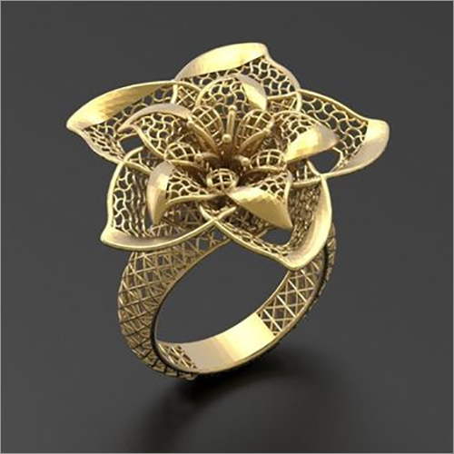

JEWELLERY COMPUTER AIDED DESIGN

JEWELLERY RENDERING
Jewellery design is the art or profession of designing and creating jewellery. This is one of civilization's earliest forms of decoration, dating back at least 7,000 years to the oldest known human societies in Indus Valley Civilization, Mesopotamia and Egypt. The art has taken many forms throughout the centuries, from the simple beadwork of ancient times to the sophisticated metalworking and gem cutting known in the modern day.
Before an article of jewellery is created, design concepts are rendered followed by detailed technical drawings generated by a jewellery designer, a professional who is trained in the architectural and functional knowledge of materials, fabrication techniques, composition, wearability and market trends.
Traditional hand-drawing and drafting methods are still utilized in designing jewellery, particularly at the conceptual stage. However, a shift is taking place to computer-aided design programs. Whereas the traditionally hand-illustrated jewel is typically translated into wax or metal directly by a skilled craftsman, a CAD model is generally used as the basis for a CNC cut or 3D printed 'wax' pattern to be used in the rubber molding or lost wax casting processes.
Once conceptual/ideation is complete, the design is rendered and fabricated using the necessary materials for proper adaptation to the function of the object. For example, 24K gold was used in ancient jewellery design because it was more accessible than silver as source material. Before the 1st century many civilizations also incorporated beads into jewellery. Once the discovery of gemstones and gem cutting became more readily available, the art of jewellery ornamentation and design shifted. The earliest documented gemstone cut was done by Theophilus Presbyter (c. 1070–1125), who practiced and developed many applied arts and was a known goldsmith. Later, during the 14th century, medieval lapidary technology evolved to include cabochons and cameos.